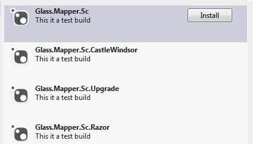
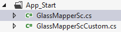

This series of tutorials will take you through the process of building a simple site using Glass.Mapper. When you have completed all the tutorials you will have a simple Sitecore site and also have covered the majority of features in Glass.Mapper.
For this tutorial we will be using many common open source projects to help us build the site, these are listed below:
Having a knowledge of these projects is advantageous but not required to complete all the tutorials. You can also swap out that Castle Windsor project for your favourite dependency injection framework.
You can find the complete source for the site in the Github repo:
You first task will be to download Glass.Mapper.Sc from Nuget. If you open the Nuget package manager and search for Glass.Mapper.Sc you will see a large selection of different projects:
The two we will focus on is Glass.Mapper.Sc and Glass.Mapper.Sc.CastleWindsor, the first project (Glass.Mapper.Sc) is the basic project that doesn't include any dependency injection framework. If you want to use this project you will need to integrate your favourite dependency injection framework to get this working. For this demo we are going to use the Glass.Mapper.Sc.CastleWindsor project, this has the popular Castle Windsor dependency injection framework already configured and ready for you to go.
Click the Install button for Glass.Mapper.Sc.CastleWindsor.
When the solution install several items are downloaded, most of these are dependencies but one additional item that gets download is a file inserted in to the App_Start folder:
This file is used by WebActivator to load Glass.Mapper.Sc when the application starts. I won't go into how WebActivator works but I will discuss the code in the file works. If you open the file you should see code similar to that below but with your namespaces:
This code sets up the dependency resolver we want to use, in this tutorial we are using Castle Windsor. We then create a Glass.Mapper Context, the context stores all the configuration we need for Glass.Mapper to run. Further down we can see an attribute loader, this will scan the current assembly for any models that have been marked up with attributes (but more on that later). Finally we pass the attribute loader to our context to so that the context can load all the required models.
Don't worry if this doesn't all make sense straight away, as you go through the tutorials it will all be come clear. With a single click on Nuget we have installed and setup everything we need to get Glass.Mapper.Sc working.
If you are ready, on to Tutorial 2 - Creating a simple Home page